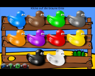
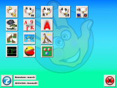

Software für Kinder
Zum Verständnis dieses Artikels sind folgende Seiten hilfreich:
Wenn die eigenen Kinder anfangen, sich für den Computer interessieren oder von den Eltern an den Computer herangeführt werden sollen, dann steht bei den meisten Eltern Sicherheit, Einfachheit und Qualität an oberster Stelle. Dieser Artikel soll Eltern helfen, schnell die ersten Programme zu installieren, konfigurieren und auszuprobieren. Es gibt viele (meist kostenlose, freie, Open Source) Programme, die Ubuntu sehr nützlich und wertvoll für Kinder werden lassen.
Insbesondere Eltern, die kein tiefer gehendes Wissen bei der Bedienung und Konfiguration des Computers besitzen, erhalten so einen schnellen Überblick, welche Software für Kinder geeignet ist. Die endgültige Entscheidung treffen Eltern natürlich letztendlich selbst, weil sie ihre Kinder am besten beurteilen können. Die folgenden Kapitel sind bewusst nicht in Altersgruppen unterteilt, da jeder auch eigene Vorlieben hat und nicht von vermeintlich "zu einfachen" Programmen ausgeschlossen werden möchte.
Eltern sollten grundsätzlich Software selbst ausprobieren und testen, bevor sie den Kindern präsentiert werden. Alleine schon aus dem Grund, dass Eltern mit entsprechendem Know-How bei der Bedienung glänzen können und nicht dumm ratlos neben dem Kind sitzen, sondern väterliche/mütterliche Weisheit demonstrieren.
Software¶
Genug der notwendigen Vorinformationen - es folgen die ausgewählten Lernprogramme und Lernspiele, welche dem Autor dieses Artikels besonders positiv aufgefallen sind und auch (längerfristig) verwendet wurden. Diese Auflistung ist natürlich in keiner Weise "vollständig", sondern stellt eine Sammlung von Programmen dar, die für Eltern und Kinder sowohl lehrreich als auch unterhaltsam sein kann. Die Reihenfolge lehnt sich zunächst am ungefähren Alter der Kinder an, so dass später gelistete Software mehr Voraussetzungen (z.B. Lesen können) bzw. komplexere Fähigkeiten (z.B. vorausschauendes logisches Denken) erfordern.
Weitere Programmempfehlungen sind in der Kategorie Kinder zu finden.
| Legende | ||
| Symbol | Beschreibung | |
 | Bedienung, Texte, Sprache (auch) in deutsch. | |
| Kann (auch) mit der Tastatur bedient werden. | ||
| Kann (auch) mit der Maus bedient werden. | ||
| Kann (auch) mit einem Joystick/Joypad bedient werden. | ||
| Programm ist kostenlos, d.h. Open Source, Freeware, etc. | ||
| Programm ist kostenpflichtig, kann aber teilweise in (eingeschränkten) Demoversion kostenlos getestet werden. | ||
| Programm basiert auf Adobe Flash, d.h. es muss ein Flash-Player installiert sein. Dann kann das Programm in einem Webbrowser geöffnet und ausgeführt werden. | ||
| Programm benötigt einem (HTML5-fähigen) Webbrowser. | ||
Malen, Bauen, Suchen, Merken¶
... kann man auch sehr gut und gerne mit Papierblock und Buntstiften bzw. Klötzchen, Lego, etc. Aber der Computer kann weitere multimediale Eigenschaften hinzufügen und nebenbei den Umgang mit der Maus schulen.
| TuxPaint |
TuxPaint¶
Ein Malprogramm für die kleinsten. Mit einer großen Sammlung von Stempeln (z.B. Tiere, Pflanzen) die zum Teil auch mit Tönen untermalt sind.
YouTube Video, Wiki, Homepage,
tuxpaint (universe)
tuxpaint-data (universe)
tuxpaint-stamps-default (universe)
 mit apturl
mit apturl
Paketliste zum Kopieren:
sudo apt-get install tuxpaint tuxpaint-data tuxpaint-stamps-default
sudo aptitude install tuxpaint tuxpaint-data tuxpaint-stamps-default
|  |
| GCompris |
GCompris¶
Lernspielsammlung schon für Vorschulkinder. Zahlreiche Knobelspiele und Aufgaben für jüngere Kinder, die schon erste logische Aufgaben am Rechner lösen können.
YouTube Video, Wiki, Homepage,
gcompris (universe)
gcompris-data (universe)
gcompris-sound-de (universe)
mit apturl
Paketliste zum Kopieren:
sudo apt-get install gcompris gcompris-data gcompris-sound-de
sudo aptitude install gcompris gcompris-data gcompris-sound-de
|  |
| Childsplay |
Childsplay¶
Lernspielsammlung schon für Vorschulkinder. Zahlreiche Knobelspiele und Aufgaben für jüngere Kinder, die schon erste logische Aufgaben am Rechner lösen können.
childsplay (universe)
childsplay-alphabet-sounds-de (universe)
childsplay-plugins (universe)
mit apturl
Paketliste zum Kopieren:
sudo apt-get install childsplay childsplay-alphabet-sounds-de childsplay-plugins
sudo aptitude install childsplay childsplay-alphabet-sounds-de childsplay-plugins
Lesen, Rechnen, Tippen¶
... lernt man in der Schule. Aber wenn der Computer dazu motivieren kann, diese grundlegenden Fähigkeiten zu fördern und zu vertiefen, ist dies eine willkommene Symbiose aus Computer "spielen" und lernen.
| Sebran |
Sebran¶
Einfache, aber gute Sammlung von Aufgaben für Vor- und Grundschüler: z.B. Memory, Zahlen, Buchstaben, Grundrechenarten, etc.
Dies ist ein Windows Programm, welches mit Wine problemlos ausgeführt werden kann. Download: sebran.exe 
Logik, Rätsel, Komplexität¶
Die etwas älteren Kinder brauchen auch größere Herausforderungen. Mehrere logische Schritte verknüpfen zu können um ein Ziel zu erreichen bzw. eine Aufgabe zu lösen ist eine Leistung, welche die Kinder herausfordert, anspornt und stolz darüber berichten lässt, was es geschafft hat.
| gBrainy |
gBrainy¶
Knobelaufgaben fürs Gehirn - von einfach bis anspruchsvoll. Es stehen vier Hauptrubriken zur Verfügung: Logikrätsel, Kopfrechenübungen, Gedächtnisübungen und verbale Analogien. Man kann den Schwierigkeitsgrad einstellen (leicht, mittel, schwer) und die Countdown-Zeit für die Merkaufgaben.
YouTube Video, Wiki, Homepage,
gbrainy
mit apturl
Paketliste zum Kopieren:
sudo apt-get install gbrainy
sudo aptitude install gbrainy
| Numpty Physik |
Numpty Physik¶
Innovatives Spiel bei dem man eine rote Kugel zu einem Stern bringen muss. Dabei kann man Objekte malen und diese verhalten sich nach physikalischen Regeln, d.h. ein Stein fällt nach unten, eine gebogene Stange kippt in die Richtung ihres Schwerpunktes, etc. Wenn das Spiel startet, gibt es kein Menü oder Text, man muss sofort losmalen. Bewegt man aber den Mauszeiger ganz an den rechten oder linken Rand, schiebt sich doch ein kleines Menü in's Bild. Fördert die Kreativität und physikalische Grundgesetze.
numptyphysics (universe)
mit apturl
Paketliste zum Kopieren:
sudo apt-get install numptyphysics
sudo aptitude install numptyphysics
Es gibt auch eine kommerzielle Variante Crayon Physics Deluxe, welche das ganze noch etwas professioneller macht (die Levels werden "gezeichnet") und viele Levels mitbringt, untermalt mit schöner Hintergrundmusik.
| COGS |
COGS¶
Wunderschön animiertes Rätselspiel in 3D: Zahnräder in die richtige Reihenfolge bringen, Pipelines zusammenbauen, Glocken zum Klingen bringen, etc. Zuerst glaubt man, die Level in relativ kurzer Zeit durchgespielt zu haben, beißt sich aber zum Schluss ganz schön die Zähne aus. Im Challange-Modus können die Level mit maximal 10 Zügen oder in maximal 10 Sekunden gelöst werden, um höhere Level frei zuschalten.
Youtube Video, Wiki, Homepage, 
Forschen, Naturwissenschaft¶
 |
| Wald-Abenteuer |
Jako-O Wald-Abenteuer / Klima-und-Umwelt¶
Ein kleiner Junge "Silas" begleitet das Kind bei der Erkundung von Natur & Technik. Alles mit deutscher Sprachausgabe, d.h. das Kind muss nicht einmal unbedingt lesen können sondern kann mit der Maus alles mögliche anklicken - wenn die Maus über etwas "anklickbares" fährt wird dies gelb umrandet oder animiert. Wenn man gar nichts tut, spricht Silas und gibt Vorschläge.
Sehr gute CD-ROMs, die offiziell nur für Windows angeboten werden. Da der Inhalt aber nichts anderes als ein Flash-Programm ist, laufen diese CDs auch unter Linux. Mit dem Flashplayer für Linux gibt es dabei keine Probleme mit dem Abspielen.
| Google Earth |
Google Earth¶
Egal ob klein oder groß: Kinder "fliegen" mit erstaunlichem Interesse über unsere Erde! Die kleineren suchen z.B. Vulkane oder Inseln, ältere tippen bereits Namen von Orten oder Artefakten ("Freiheitsstatue", "Eiffelturm") ein, werden an die entsprechende Lokation "geflogen" und können ein 3D Modell davon betrachten. Ein unglaublicher Beschleuniger von Wissen über Geographie, Erdkunde, Geschichte!
YouTube Video, Wiki, Homepage,
| Phun |
Phun¶
Gut gemachter Physikbaukasten, um geometrische Objekte zu "malen", zu verbinden (z.B. mit Federn, Zahnrädern oder Schrauben) und mit Eigenschaften auszustatten (Gewicht, Schwerkraft, Motor für Räder, etc.). Ein zu löschendes Objekt wird einfach durchgestrichen - und weg ist es. Flüssigkeiten, Ketten und weitere Objekte werden unterstützt, so dass man einen kleinen Baukasten hat, mit dem man alle (un-)möglichen Apparate bauen kann. Das kommerzielle Nachfolgeprojekt heißt Algodoo .
| Celestia |
Celestia¶
Erkundung des Weltraumes und der Planeten.
YouTube Video, Wiki, Homepage,
celestia-common (universe)
celestia-gnome (universe)
mit apturl
Paketliste zum Kopieren:
sudo apt-get install celestia-common celestia-gnome
sudo aptitude install celestia-common celestia-gnome
| Stellarium |
Stellarium¶
Astronomie-Programm zur visuellen Erkundung des Sternenhimmels, deren Sonnen und Planeten und Sternbilder.
YouTube Video, Wiki, Homepage,
stellarium (universe)
stellarium-data (universe)
mit apturl
Paketliste zum Kopieren:
sudo apt-get install stellarium stellarium-data
sudo aptitude install stellarium stellarium-data
Spielen¶
Wir lernen auch beim Spielen und optimalerweise ist jede Lernsoftware auch spielerisch verpackt. Aber das Spiel ist auch um des Spielens willens wichtig, entspannt von (schwierigen) Denkleistungen und belohnt für geleistete Arbeit. Neben unzähligen Spielen seien hier besonders kindgerechte (insbesondere möglichst gewaltfreie) Spiele aufgezählt, die den jüngeren und jüngsten viel Spaß bereiten können.
Zusätzlich wichtig bei Spielen ist die USK-Kennzeichnung als Altersangabe für die Zielgruppe, welche in Deutschland nach dem Jugendschutzgesetz verpflichtend ist und durch die Unterhaltungssoftware Selbstkontrolle vergeben wird. Dabei steht hinter dem Kürzel "USK" eine Zahl, die das Mindestalter angibt.
Nachfolgend eine Sortierung innerhalb dieses Wikis beschriebener Spiele anhand ihrer USK-Klassifizierung: USK0 | USK6 | USK12 | USK16 | USK18 | Kinder (Spiele für jung und alt;ohne USK-Alterskennzeichnung)
Viele der hier vorgestellten Programme können direkt über das Ubuntu Software-Center heruntergeladen und installiert werden. Es gibt jedoch auch viele erwähnenswerte Programme, die nicht im Software-Center enthalten sind und aus dem Internet heruntergeladen und installiert werden müssen. Zur Installation von solchen "externen" Programmen für Ubuntu (in Form von Debian-Paketen mit der Endung .deb) wird in aktuellen Ubuntu-Versionen automatisch das Software-Center gestartet (siehe Artikel Anwendungen hinzufügen).
| Picsaw |
Picsaw¶
Picsaw ist kleines Spiel, das aus eigenen Bildern ein Puzzle macht. Dabei ist es bewusst einfach gehalten. Beim von Canonical ausgelobten Programmierwettbewerb "Ubuntu App Showdown contest 2012" belegte es unter 133 Einsendungen den dritten Platz.
Simplix Puzzle¶
Simplix Puzzle ist ein Bilder-Schiebepuzzle. Zu Grunde liegt eine einfache Spielidee, die aber je nach Motiv und Anzahl der Puzzlesteine auch für Erwachsene eine Herausforderung darstellen kann. Neben Deutsch beherrscht das Programm auch die Sprachen Englisch, Spanisch, Italienisch und Türkisch.
| SuperTuxKart |
SuperTuxKart¶
Lustiges 3D-Autorennspiel mit vielen Autos, Fahrfiguren und Strecken. Einfach zu steuern über die Tastatur oder ein anderes Eingabesteuergerät (z.B. Joypad). Die Kinder lernen im Wettstreit mit den Computergegnern (3 Schwierigkeitsstufen) bald, optimal zu beschleunigen, zu bremsen und den kürzesten Weg zu nehmen. Viele unterschiedliche Strecken und tolle Musik dazu!
YouTube Video, Wiki, Homepage,
supertuxkart (universe)
supertuxkart-data (universe)
mit apturl
Paketliste zum Kopieren:
sudo apt-get install supertuxkart supertuxkart-data
sudo aptitude install supertuxkart supertuxkart-data
| Cut the rope |
Cut the rope¶
Die Aufgabe, ein Bonbon so zu manövrieren, daß der hungrige Frosch es aufessen kann ist sehr schön umgesetzt mit kindgerechter Grafik und realistischer Physik. So hängt die Süßigkeit an Seilen, die man durchschneiden muss und nach Möglichkeit unterwegs Sterne sammeln kann. Seifenblasen helfen, es nach oben steigen zu lassen und angeklebte Luftballons kann man drücken um es in bestimmte Richtungen zu pusten. Später kommen kleine lustige Spinnen auf den Seilen gekrabbelt, die das Bonbon stehlen wollen. Sehr niedlich mit toller Musik und leicht ansteigendem Schwierigkeitsgrad. Browser-Spiel mit derzeit 2 Leveln, kann kostenlos direkt in einem modernen HTML5 Browser gespielt (oder als kostenpflichtige App (iOS, Android) gekauft) werden.
| Truck Loader |
Truck Loader¶
Knobelspaß, um mit einem kleinen Fahrzeug mit Magnetarm Kisten in einen Laster zu stapeln. Dabei gibt es Schalter, Aufzüge und knifflige Levels. Kisten mit Glas sind zerbrechlich und dürfen nicht (oft) fallen gelassen werden.
| Frozen Bubble |
Frozen Bubble¶
Farbige Kugeln aufeinander schiessen, bis alle verschwunden sind - bei sehr cooler Musik! Was man dabei lernt? Farben zuzuordnen und immer schneller die Kugeln möglichst passend "anzukleben".
frozen-bubble (universe)
frozen-bubble-data (universe)
fb-music-high (universe)
mit apturl
Paketliste zum Kopieren:
sudo apt-get install frozen-bubble frozen-bubble-data fb-music-high
sudo aptitude install frozen-bubble frozen-bubble-data fb-music-high
| Monsterz |
Monsterz¶
Lustige "Jewels" Variante mit kleinen Monstern und cooler Musik: es müssen innerhalb eines Zeitlimits mindestens 3 Monster horizontal oder vertikal in eine Reihe gebracht werden.
monsterz (universe)
monsterz-data (universe)
mit apturl
Paketliste zum Kopieren:
sudo apt-get install monsterz monsterz-data
sudo aptitude install monsterz monsterz-data
| Hex-a-hop |
Hex-a-hop¶
Mit einem kleinem Mädchen als Spielfigur immer komplexer werdende Plattformen abhüpfen. Mit immer schwierigeren Plattforminseln, Trampolinen, etc. Schult die Planung von längeren Wegen und Strategien um den - oft einzig möglichen - Weg zu finden.
hex-a-hop (universe)
mit apturl
Paketliste zum Kopieren:
sudo apt-get install hex-a-hop
sudo aptitude install hex-a-hop
| BIT.TRIP RUNNER |
BIT.TRIP RUNNER¶
Sehr einfache Bedienung: man beginnt mit nur einer Taste, um ein Männchen rechtzeitig über Hindernisse hüpfen zu lassen. Erst langsam, dann schneller. Später muss man auch unter Hindernissen hindurchschlittern. Das ganze in 8-Bit Klötzchengrafikdesign, aber 3D-mäßig auf modernem Niveau und mit antreibender Musik. Etwas störend kann es zu Beginn sein, wenn man beim kleinsten Fehler irgendwo hängen bleibt und die Strecke wieder von vorn beginnen muss. Doch das geht blitzschnell und man lernt den Level immer besser kennen und kommt immer weiter. Schließlich kann man Bonuspunkte und "power ups" einsammeln. Das Spiel ist relativ schwer und für (zu) kleine Kinder evtl. schnell frustrierend. Jedoch hat es einen eigenen Charme, der viele begeistern kann - einfach mal ausprobieren.
YouTube Video, Wiki, Homepage,
| Snapshot |
Snapshot¶
Auf den ersten Blick ein klassisches Plattformspiel, bei dem man mit einem kleinen Roboter Sterne einsammeln muss. Doch der Clou liegt in den Aufgaben, unmögliche Hindernisse zu überwinden indem man (bis zu 3) Fotos von bestimmten Objekten macht und diese Fotos an anderer Stelle wieder ablegen kann - inkl. den fotografierten Gegenständen! Ist z.B. ein Berg zu hoch, fotografiert man mit der Maus eine Kiste, an die man mit dem Roboter nicht herankommt, und legt das Foto vor dem Roboter wieder ab. Die Kiste kann dann mit dem Roboter verschoben werden und er kann auf die Kiste hüpfen. Wenn er durch einen kleinen Gang kriechen muss, zieht er sich selbst an den "Ohren" (Antennen) in die Knie Das Spiel ist im Humble Indie Bundle 7 enthalten oder kann auch separat gekauft werden.
| X-Moto |
X-Moto¶
Mit dem Motocross-Motorrad unzählige Hindernisse meistern. Das 2D-Motorrad verhält sich dabei physikalisch korrekt und man muss schon genau die Balance halten und zum richtigen Zeitpunkt beschleunigen oder bremsen. Lerninhalt: physikalisches Verhalten von motorbetriebenem Zweirad mit Fahrer.
YouTube Video, Wiki, Homepage,
xmoto (universe)
xmoto-data (universe)
mit apturl
Paketliste zum Kopieren:
sudo apt-get install xmoto xmoto-data
sudo aptitude install xmoto xmoto-data
| Osmos |
Osmos¶
Man ist ein Kreis (eine Art Amöbe) und muss in den diversen Leveln andere, kleinere Kreise (mit teilweise unterschiedlichen Eigenschaften) absorbieren (aufsaugen) oder dadurch auch zum größten werden. Das schöne an diesem Spiel ist es, daß es meist sehr ruhig zugeht - oft schaut man auch nur zu, wie z.B. die Kreise durch die Gravitationskräfte um Galaxien ihre Bahnen ziehen und dabei kleinere Tropfen aufsaugen. Die Musik ist absolut beruhigend und manchmal muss man auf Zeitlupe schalten um möglichst genau zu manövrieren. Und diese Bewegung muss mit dem eigenen Material bezahlt werden, da man sich durch Abstoßen von eigener Flüssigkeit fortbewegt. Man muss also mit den vorhandenen Ressourcen genau haushalten, z.B. ist man in einem Level der Kleinste und die Aufgabe lautet "Werde der Größte."! Dies schafft man nur, wenn man defensiv ist: aufpassen, dass man nicht selbst geschluckt wird und größer werden, indem man darauf wartet, dass andere kleiner werden oder deren abgestoßene Kreise absorbiert.
Osmos ist kostenpflichtig und kann für 9,99 USD über das Software-Center gekauft werden.
YouTube Video, Wiki, Homepage,
| World of Goo |
World of Goo¶
Kleine lustige runde Kugeln (Goos = Bälle, Flummis) mit großen Glubschaugen warten, darauf gerettet zu werden. Dazu muss man Hindernisse überwinden, indem man mit den Goos Gerüste baut, um zum rettenden Saugrohr zu gelangen. Neben den Goos, die unterschiedliche Eigenschaften haben (klebrig, flüssig, etc.), hat man noch andere Hilfsmittel wie z.B. Luftballons, um Brücken über Schluchten zu bauen oder Goo-Konstrukte fliegen zu lassen. Hübsche Grafik, niedliche Animation, tolle Musik. Und nicht vergessen, die Nachrichten des Schildermachers zu lesen - die sind zwar meist rätselhaft und oft wenig nützlich, aber lustig.
Youtube Video, Wiki, Homepage,
Problembehebung¶
Damit man nicht ganz unvorbereitet ist, wenn z.B. der Bildschirm schwarz bleibt beim Start eines Spiels, hier die wichtigsten Tipps, wie man wieder auf den normalen Desktop zurückkommt bzw. ein "hängengebliebenes" Programm beendet:
Programmfenster lässt sich nicht mehr bedienen:
Mit dem Programm "System Monitor Indicator" (über den Dash zu finden und zu starten) kann man im Reiter "Prozesse" den Prozess des Programms meist ausfindig machen, auswählen und mit der rechten Maustaste das Kontextmenü öffnen und "Prozess abwürgen" aufrufen. Dies sollte das unbedienbare Fenster schließen.
"Nichts" geht mehr, der Desktop ist eingefroren, unbedienbar geworden oder der Bildschirm ist nur schwarz
Bevor man den Rechner neu startet, kann man vorher noch versuchen, das gestartete Programm zwingend zu beenden ("killen"). Dazu wechselt man das Terminal mit der Tastenkombination Strg + Alt + F1 . Es erscheint eine Eingabeaufforderung (prompt) bei der man sich einloggen kann:
Ubuntu 11.10 MyComputer tty1 MyComputer login: MaxMusterman Password: ... MaxMusterman@MyComputer$
Darin kann man sich eine Liste aller laufenden Prozesse anzeigen lassen:
MaxMusterman@MyComputer$ps -e | more
Hat man den vermeintlichen Prozess gefunden, kann man diesen über seine Prozess-Nummer beenden:
... 9604 ? 00:00:00 TollesProgramm ... MaxMusterman@MyComputer$kill 9604
Im besten Fall hat dies das Problem gelöst und man kann wieder mit der Tastenkombination Strg + Alt + F7 auf den Desktop wechseln. Im schlimmsten Fall hilft dann wirklich nur ein Neustart des Rechners. Z.B. durch Eingabe des Befehls shutdown:
MaxMusterman@MyComputer$sudo shutdown now
Links¶
tiptoi - kommerzielles Lernsystem für Kinder
tttool - Eigene Bücher, Spiele etc. erstellen
GNOME-Games - Spielesammlung mit zahlreichen Klassikern wie Mahjongg, Vier gewinnt oder Tetris (Quadrapassel)
KDE-Spiele - dito, für KDE
Edubuntu - Programmpaket für Schule und Bildung
Kinder - Ubuntu kindergerecht einrichten
Bildung und Wissenschaft
 Programme aus den Bereichen Bildung und Wissenschaft
Programme aus den Bereichen Bildung und WissenschaftSoftware
Programme, aufgeteilt nach KategorienSpiele
Übersichtsartikel
- Erstellt mit Inyoka
-
 2004 – 2017 ubuntuusers.de • Einige Rechte vorbehalten
2004 – 2017 ubuntuusers.de • Einige Rechte vorbehalten
Lizenz • Kontakt • Datenschutz • Impressum • Serverstatus -
Serverhousing gespendet von